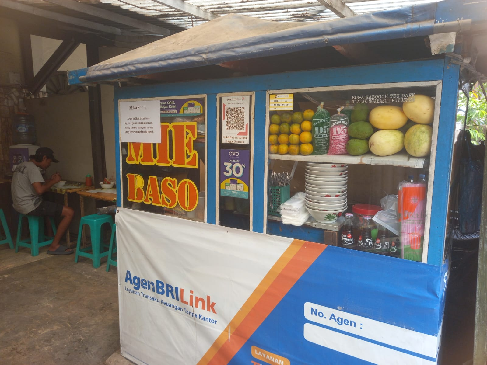

Warung Baso Mas Aris, Bandung
Semangkuk bakso panas, resep yang sama sejak lama.
Daging sapi digiling setiap pagi, kuah kaldu direbus tanpa penyedap instan, disajikan hangat langsung dari dapur warung kami.
Kenapa pelanggan kembali lagi
Bukan sekadar bakso, tapi kebiasaan yang kami jaga sejak lama.
Daging digiling setiap hari
Daging sapi pilihan digiling pagi hari, bukan stok beku yang disimpan berhari-hari.
Kaldu direbus 8 jam
Kuah kami direbus lama dari tulang sapi asli, tanpa penyedap instan tambahan.
Resep asli sejak 30 tahun lalu
Racikan bumbu masih sama seperti saat Mas Aris pertama kali berjualan keliling.
Dimasak fresh tiap hari
Dibuat dalam jumlah terbatas setiap pagi, habis berarti kami tutup lebih awal.
Kata pelanggan
Kuahnya kerasa banget kaldu sapinya, nggak asin doang kayak bakso lain. Udah jadi langganan bulanan.
Bakso nya besar-besar dan kenyal, harga masih ramah buat mahasiswa. Antriannya sepadan.
Anak-anak paling suka bakso halusnya. Tiap akhir pekan pasti mampir sebelum pulang.
Alamat
15 Jl. H. Alpi Bandung, Jawa Barat
Jam buka
| Senin – Sabtu | 10.00 – 20.30 |
| Minggu | 09.30 – 20.30 |
Telepon / WhatsApp
0877-0034-5965
